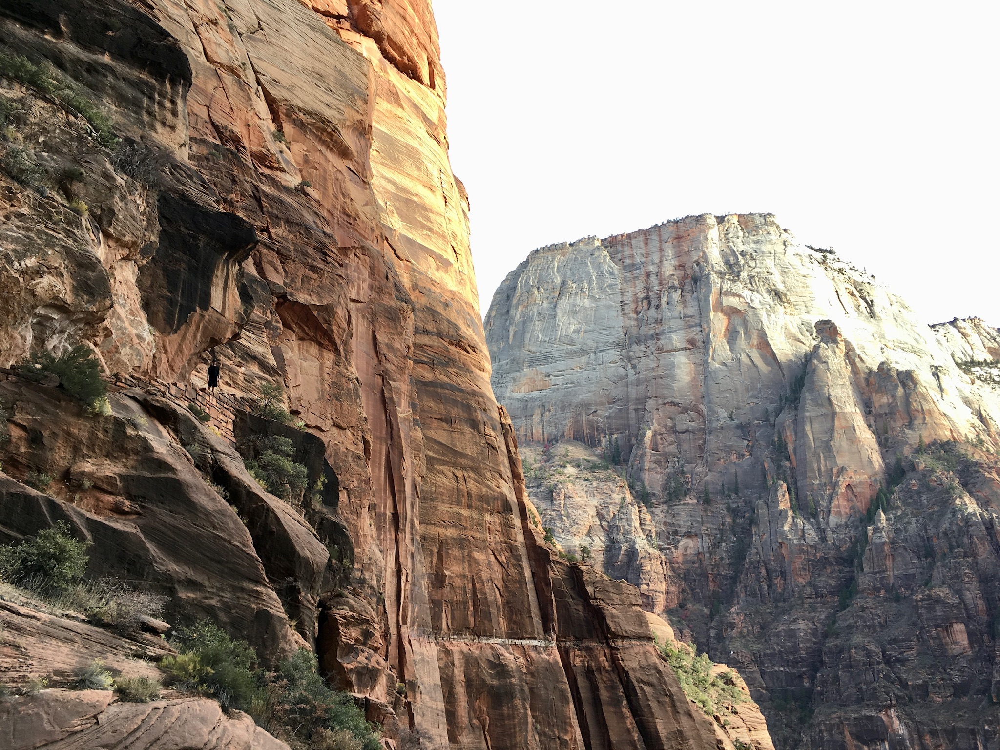
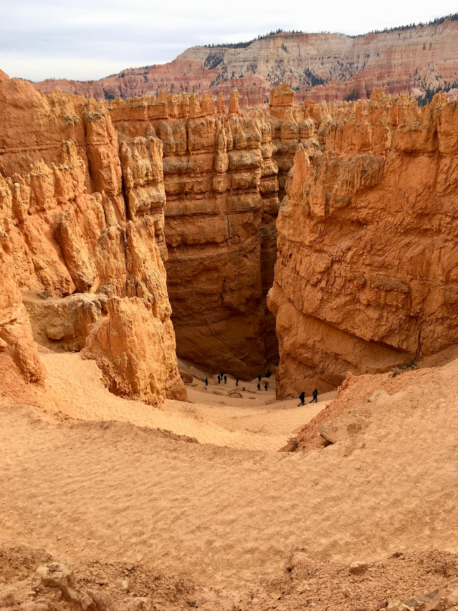
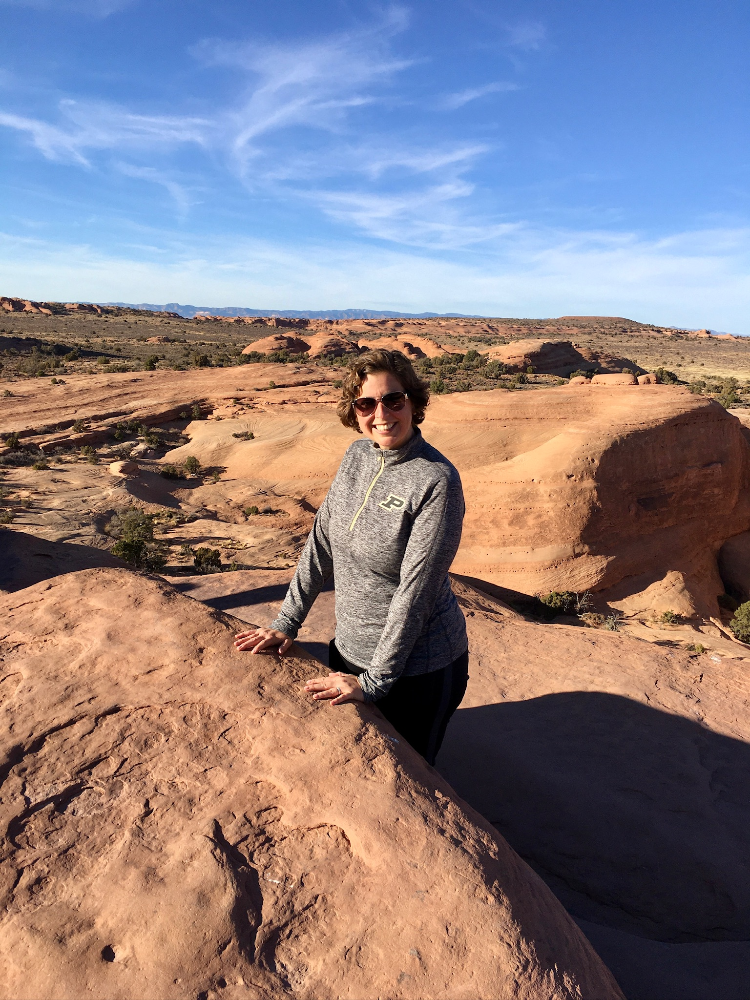

In November 2019, Spencer proposed a one-way national-park trip from Denver to Las Vegas. We had never crossed the country this way. Our well-loved Prius V had already made road trips to Miami, Chicago, and Dallas from Cincinnati. We trusted the car, so driving it West didn’t feel like a risk, more like a dare we were happy to accept.
For Cassie, the timing carried extra meaning. She was recovering her energy following cancer treatment. She believed she would be able to hike and explore again; Utah tested that belief.
The drive became the trip
Earlier road trips had been focused on arriving. This time, we had enough space in the schedule to treat the miles between destinations as part of the experience. We researched oddities, took photographs, and moved from one small story to the next.
This was our first trip into really wide open places. The view through the windshield was absolutely breathtaking. Seeing the new landscapes as a family created an incredible collective experience.

Delicate Arch: the first big test
We grabbed Spencer in Denver and followed I-70 west to Moab and Arches National Park. Delicate Arch was familiar to us thanks to Utah license plates. However, the trail to get to it in person was tough. The day was hot, the climb was hard, and the exposed approach near the end activated Cassie’s height anxiety, which had become sharper after treatment.
Spencer kept encouraging us. The narrow ledge was scary, but the family photograph beneath the arch became proof that we had reached something together. It was not simply a beautiful place. It was a marker in Cassie’s recovery and an early lesson in what encouragement could make possible.
Different favorites
At Capital Reef, Cassie and Spencer found the landscape to be stark; less dynamic than the colors and shapes in Arches. David loved its nearly vegetationless, lunar quality. The disagreement became part of the fun. We found common ground when we came upon our first ever set of petroglyphs! We managed to spy exact images that we had seen on television.
Bryce Canyon belonged to Cassie. Looking down into the hoodoos was spectacular, and hiking among them made the colors and formations feel alive. The drawback was obvious: every step downhill, into the canyon, had to be repaid on the climb out. Cassie prefers the hard part first, but Bryce was not interested in her preference.
The drive through Glen Canyon felt like windshield magic. The landscapes changed faster than we could understand the geology. We began noticing overland vans and expedition trucks—vehicles that seemed common in Utah and exotic to us. We could not yet see the minivan or the sprintervan in our future, but the idea had entered our consciousness.

Scout Lookout
Zion delivered the trip’s hardest day. The climb toward Scout Lookout was punishing. Before the halfway point, Cassie wanted to turn around. Spencer wanted to see the top, and if she stopped, she feared everyone would stop. So she kept moving.
At the top, the guys walked toward the beginning of Angels Landing while Cassie sat on the mountain, exhausted, with her face in her hands. Chipmunks—well practiced around hikers and their granola bars—ran up her side, across her back, and down again. She survived, learned, and laughed later.
The view felt beyond anything we had experienced from a beach, airplane, or skyscraper. More importantly, Cassie was proud. She had expected to recover her strength. Now she had climbed high enough to look down on the proof.

Navigating life on the road
Daily life was simple. The Prius offered transportation, storage, comfortable seats, and room for a cooler and snack bag. We stayed in small hotels, Airbnbs, and cabins. Shoulder season meant some businesses were already closed. At one point, the only obvious restaurant was barbecue—not ideal for someone newly vegan—so Cassie assembled a meal from a baked potato and vegetables. Granola bars filled the gaps.
Layers mattered in November: hats and scarves in the morning, lighter clothing by afternoon. Roadside laundry taught us that a long trip did not require an outfit for every day. The cooler expanded Cassie’s vegan options and became a piece of every future travel system. In the minivan we added a bed. In PourHouse, refrigeration and a bathroom became game changers. The basic lesson remained: we needed less than we thought, but the right small comforts could change everything.
Go small, go now
Dropping Spencer at the Las Vegas airport was bittersweet. We were sad to see him leave and grateful that he had pushed us into the trip. Cassie and David still had a long drive toward Florida ahead, and we were excited rather than depleted.
We knew we wanted more national parks and more road travel. We wanted to return to Utah because it held the first taste of this adventure life. The trip had shown us that the drive itself could be fun, that recovery could contain hard and joyful things, and that time with an adult child could become one of a family’s best memories.
This was not yet van life. We did not sleep in the Prius. We did, however, learn the ideas that would make later travel work: start with the vehicle you already have; pack less; carry food that works for you; leave room for odd roadside stops; respect energy and weather; and let a trip change what you imagine is possible. Go small, go now.
COVID would interrupt our travel momentum while we were in Florida. The minivan era would have to wait. But the direction had already changed.